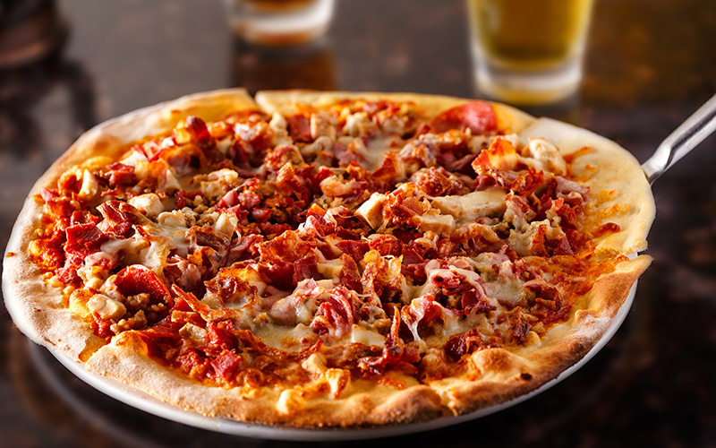

Meatfeast Pizza

Meatfeast Pizza Recipe
A Meatfeast pizza is a hearty and indulgent pizza topped with a variety of meats. It typically includes a
combination of pepperoni, sausage, bacon, ham, and sometimes ground beef or chicken, all piled on a cheesy,
flavorful base with tomato sauce. Perfect for meat lovers, it’s a savory and filling choice with bold flavors in
every bite.
Ingredients
- Pizza dough (store-bought or homemade)
- Tomato sauce (or pizza sauce)
- Mozzarella cheese (shredded)
- Pepperoni (sliced)
- Italian sausage (crumbled or sliced)
- Bacon (crispy and chopped)
- Ham (sliced)
- Chicken (optional, cooked and sliced)
- Dried oregano (optional, for seasoning)
Steps
- Roll out the pizza dough on a lightly floured surface to your desired thickness, then transfer it to a
baking sheet or pizza stone.
- Spread a thin, even layer of tomato sauce (or pizza sauce) over the dough, leaving a small border around the
edges for the crust.
- Sprinkle a generous amount of shredded mozzarella cheese over the sauce, covering it evenly.
- Arrange the pepperoni, crumbled Italian sausage, chopped bacon, sliced ham, and any other meats you’re using
(ground beef or chicken) evenly over the pizza.
- Drizzle a small amount of olive oil over the top for a golden, crispy finish. You can also sprinkle a little
dried oregano or Italian seasoning for extra flavor.
- Place the pizza in the preheated oven and bake for 10-15 minutes, or until the crust is golden and the
cheese is bubbly and slightly browned.
- Once the pizza is done, remove it from the oven and let it cool for a minute or two. Slice it up, garnish
with extra herbs if desired, and serve hot!
Home